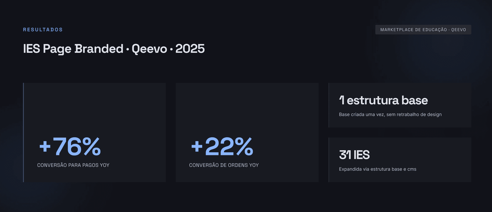
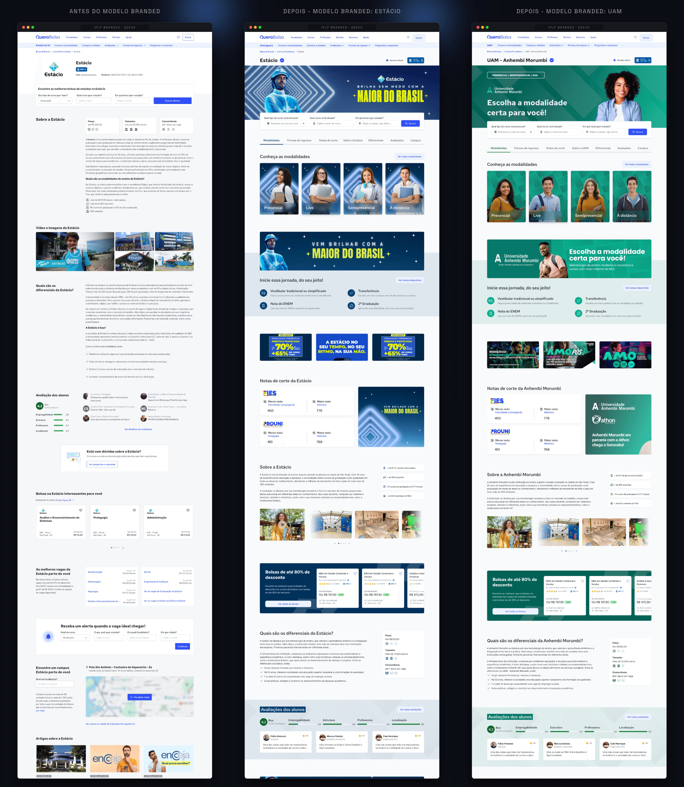
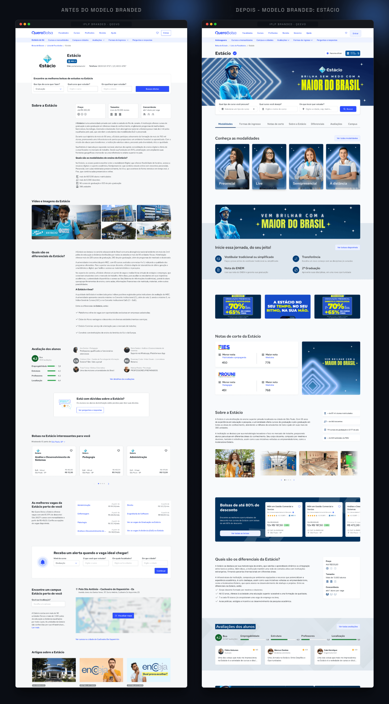
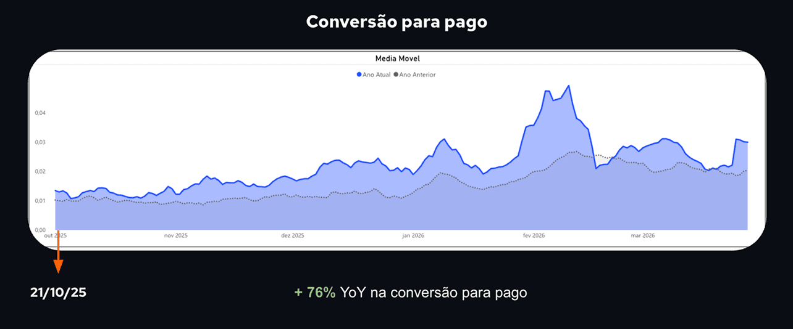
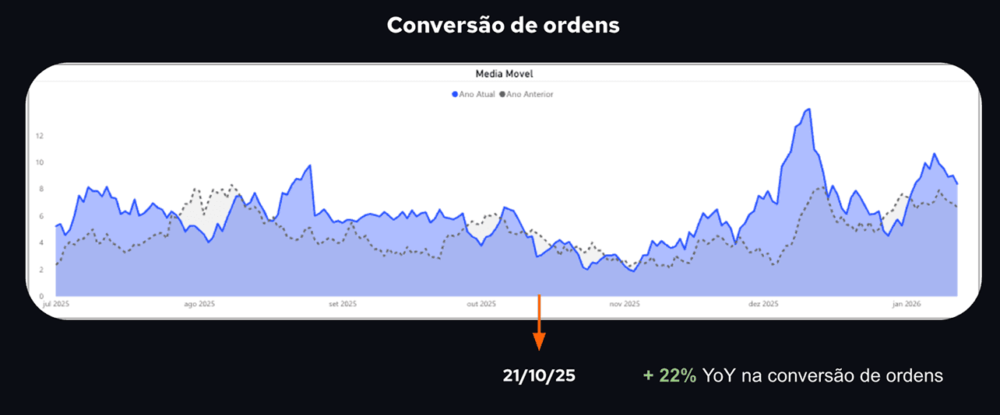

Página de instituição como loja oficial: estratégia branded
De repositório de texto a vitrine institucional para as páginas de instituição de ensino do marketplace, com arquitetura modular escalável via CMS.
De repositório de texto a vitrine institucional para as páginas de instituição de ensino do marketplace, com arquitetura modular escalável via CMS.

A página de instituição de ensino do Quero Bolsa era baseada em muito texto, sem arquitetura definida, sem identidade visual da IES e sem hierarquia clara de informação. Funcionava como repositório institucional genérico, não como vitrine da marca.
Seguindo a linha do case da página de listagem de cursos, fazia sentido estratégico ajustar o fluxo completo. O usuário chegava pela página da instituição e avançava para a listagem de cursos. Se a IES Page não gerava confiança, o funil inteiro perdia força desde o início.
O dado de 80% de migração para fora do marketplace, já identificado no case da listagem de cursos, se aplicava ao mesmo funil. A IES Page era a entrada desse fluxo: se não gerava confiança aqui, o usuário já saía antes de chegar à listagem.
O funil era claro: o usuário chegava pela IES Page, avançava para a listagem de cursos, e saía para o site da própria instituição para fechar a matrícula. A IES Page era o ponto de entrada, e também o primeiro ponto de perda de confiança.
A hipótese era transformar as páginas de instituição em lojas oficiais dentro do marketplace, com identidade visual própria, para aumentar a credibilidade percebida e reduzir essa migração. Se a página da IES parecesse uma extensão da própria instituição, o usuário teria menos motivo para sair do ecossistema.
Transformar as páginas de IES em lojas oficiais dentro do marketplace, com identidade visual própria e arquitetura modular, aumentaria a credibilidade percebida, reduziria a migração para sites externos e permitiria escalar para todas as instituições parceiras sem retrabalho de design ou engenharia.
A reestruturação foi feita seção por seção, uma decisão deliberada para reduzir risco em uma página grande com alto tráfego. O lançamento aconteceu com acompanhamento próximo de dados antes de qualquer expansão para outras IES.
Análise de comportamento e dados de conversão, com foco na correlação entre a experiência da IES Page e a taxa de migração para fora do marketplace. A página fazia parte de um fluxo maior junto com a listagem de cursos.
Documentação da hipótese com objetivo claro, critérios de aceite e métricas de sucesso. Alinhamento antecipado com produto, negócio e engenharia antes de avançar para qualquer proposta visual.
Em vez de customizar página por página, a solução foi criar uma estrutura base única e modular configurável via CMS. Cada IES poderia ter sua cor, logo e imagens mantendo a mesma arquitetura. Essa decisão viabilizou o projeto inteiro, eliminando retrabalho de design e engenharia a cada nova IES.
Cada seção da página foi redesenhada individualmente para reduzir risco de regressão em uma página de alto tráfego. Hierarquia clara, destaque para a identidade da IES e arquitetura de informação orientada à decisão do usuário.
Primeiro lançamento com acompanhamento próximo de dados. Após validação dos resultados, a solução foi expandida para 31 instituições via CMS, sem necessidade de alteração estrutural ou envolvimento de time de desenvolvimento para cada caso.
Nas imagens abaixo, a comparação entre o estado anterior e a nova experiência, com exemplos de duas IES mostrando como a identidade de marca é aplicada sem alteração estrutural.

Criar uma arquitetura modular via CMS foi a decisão que viabilizou o projeto inteiro. Em vez de customizar caso a caso, a solução foi definir uma estrutura base planejada desde o início para escalar, com menor custo de design e engenharia.
O que começou como uma intervenção em uma página virou infraestrutura de produto. A expansão para 31 IES aconteceu sem retrabalho e sem envolvimento recorrente do time de desenvolvimento, apenas com configuração no CMS pelo time de branding.

Além dos resultados de conversão, o projeto gerou relatos positivos das instituições sobre a força da marca na página e entregou velocidade de execução para o negócio na expansão para novas IES.


O que começou como uma página virou infraestrutura. Essa foi a decisão certa.
Criar uma arquitetura base via CMS em vez de customizar caso a caso não foi só uma decisão de design. Foi uma decisão de produto. Ela viabilizou a expansão para 31 instituições sem retrabalho de engenharia, transformou uma intervenção pontual em capacidade instalada, e gerou +76% YoY na conversão para pagos. A hipótese de que identidade de marca dentro do marketplace aumenta confiança e retém o usuário no funil foi confirmada em escala.